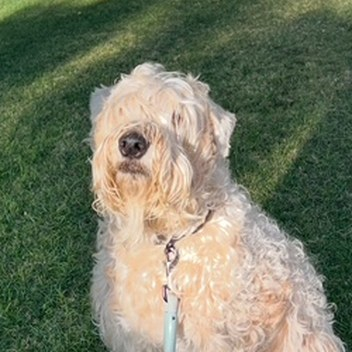

Soft Coated Wheaten TerrierAlfred is a wheaten terrier: soft wavy coat, a big heart, and a very enthusiastic hello.
The Soft Coated Wheaten Terrier comes from Ireland, where it worked as an all-purpose farm dog, herding livestock, guarding the home and keeping pests away. Today it is best known as a cheerful family companion.
Wheatens are famous for their friendly, bouncy greetings and their love of people.
A few things that keep a wheaten like Alfred happy and healthy.
Daily walks and playtime. Wheatens are energetic and enjoy games, fetch and time outdoors.
The soft coat sheds little but tangles easily. Brush several times a week and schedule regular trims.
Smart and eager to please, with a stubborn streak. Early socialization and upbeat, reward-based training work best.
The breed can be prone to some digestive, kidney and skin or food sensitivities, so regular vet visits are worthwhile.